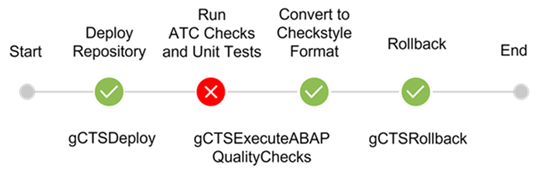

Set up a Pipeline-Based ABAP Development and Testing Process Using Git-Enabled Change and Transport System¶
Introduction¶
Git-enabled Change & Transport System (gCTS) enables you to manage your ABAP change and transport management processes using Git as an external version management system. It allows you to set up continuous integration processes for ABAP development. For current information about gCTS, see SAP Note 2821718 - Central Note for Git-enabled Change and Transport System (gCTS).
This scenario explains how to use a pipeline to deploy a commit to a test system, and execute ABAP unit tests and ATC (ABAP Test Cockpit) checks in the test system. For each new commit that arrives in the remote repository, the pipeline executes the following Piper steps in the test system:
- gctsDeploy: Deploys the commit on the test system.
- gctsExecuteABAPQualityChecks: Executes ABAP unit tests and ATC checks for the ABAP development objects of the commit.
- If the result of the testing is success, the pipeline finishes.
- If the result of the testing is error, a rollback is executed (see next step).
- Only in case of errors: gctsRollback: Executes a rollback to the previous commit. You can check the cause of the errors using the Warnings Next Generation Plugin in Jenkins.
Prerequisites¶
- You have configured Git-Enabled Change and Transport System, and you use it for your ABAP development. See Configuring Git-enabled Change & Transport System (gCTS)
- You have a Git repository on a Git server, such as GitHub, or GitLab.
The Git repository is usually created as part of the gCTS configuration. It is used to store your ABAP developments. You can use this Git repository also for the pipeline configuration. (Jenkinsfile) The repository used for the pipeline configuration needs to be accessed by the Jenkins instance. If the repository is password-protected, the user and password (or access token) should be stored in the Jenkins Credentials Store (Manage Jenkins > Manage Credentials). - You have at least two ABAP systems with a version SAP S/4HANA 2020 or higher. You need one development system that you use to push objects to the Git repository, and a test system on which you run the pipeline. You have created and cloned the Git repository on all systems, on the development system with the Development role, and on the others with the Provided role.
- You have enabled ATC checks in transaction ATC in the test system.
- You have access to a Jenkins instance including the Warnings-Next-Generation Plugin. The plug-in must be installed separately. It is required to view the results of the testing after the pipeline has run.
For the gCTS scenario, we recommend that you use the Custom Jenkins setup. - You have set up a suitable Jenkins instance as described under Getting Started with Project "Piper" under Create Your First Pipeline.
- The user that is used for the execution of the pipeline must have the credentials entered in gCTS as described in the gCTS documentation under Set User-Specific Authentication.
Process¶
The pipeline process is as follows:
- You create or change ABAP objects in the development system. When you release the transport request, the objects are pushed to the remote repository in a new commit. The pipeline is triggered by the new commit. The pipeline can be started manually in Jenkins, or automatically when the new commit arrives in the Git repository (by setting a webhook on your Git server). For more information about webhooks on GitHub, see Creating webhooks.
- The pipeline deploys the new commit on the test system.
- If the deployment is successful, the pipeline executes ATC checks and ABAP Unit tests for the objects of the commit depending on the specified object scope. In the sample configuration provided below, this is
localChangedObjects, which means, the checks are executed for all objects that were changed by the last activity in the local repository.- If the checks don´t find any errors, the pipeline finishes. The test system remains on the new commit, and you can continue your testing activities, for example, using manual tests.
- If the checks find errors, the pipeline continues with the next step.
-
In case of warnings or errors, the pipeline executes a rollback to the last active commit in the test system. You can display the errors and warnings of the checks in the Warnings-Next-Generation Plugin. For more information about the mapping of priorities and severities of the checks to statuses displayed in Jenkins, see the description of the following parameters in the description of the gctsExecuteABAPQualityChecks step:
After analyzing the errors, you can correct the issues in the development system. Once you release the new transport request, the pipeline is triggered again.
The following image shows the steps involved when the checks finish successfully:
Image: Build and Deploy Process in Jenkins
The following image shows the steps involved when the checks result in warnings or errors:

Image: Build and Deploy Process in Jenkins
Example¶
To implement the gCTS scenario, create a Jenkinsfile in the root directory of your Git repository. The sample Jenkinsfile below contains all configuration information required. It is also possible to use an additional .pipeline/config.yml file for the configuration of the step parameters. But the config.yml is not required for the gCTS scenario described here. For more information, see the examples in the individual step descriptions. For general information about configuration options in "Piper" projects, see Configuration.
Jenkinsfile¶
@Library(['piper-lib-os']) _
pipeline {
agent any
options {
disableConcurrentBuilds()
}
environment {
DEMOCREDS = 'ABAPUserPasswordCredentialsId'
HOST = 'https://<host of the ABAP system>:<port>'
CLIENT = '000'
REPO = '<repository name>'
REPO_URL = "<URL of the remote Git Repository>"
}
stages {
stage('gCTS Deploy') {
when {
anyOf {
branch 'main'
}
}
steps {
gctsDeploy(
script: this,
host: HOST,
client: CLIENT,
abapCredentialsId: DEMOCREDS,
repository: REPO,
remoteRepositoryURL: REPO_URL,
role: 'SOURCE',
vSID: '<vSID>')
}
}
stage('gctsExecuteABAPQualityChecks') {
when {
anyOf {
branch 'main'
}
}
steps {
script {
try {
gctsExecuteABAPQualityChecks(
script: this,
host: HOST,
client: CLIENT,
abapCredentialsId: DEMOCREDS,
repository: REPO,
scope: 'localChangedObjects',
commit: "${env.GIT_COMMIT}",
workspace: "${WORKSPACE}")
} catch (Exception ex) {
currentBuild.result = 'FAILURE'
unstable(message: "${STAGE_NAME} is unstable")
}
}
}
}
stage('Results in Checkstyle') {
when {
anyOf {
branch 'main'
}
}
steps{
recordIssues(
enabledForFailure: true, aggregatingResults: true,
tools: [checkStyle(pattern: 'ATCResults.xml', reportEncoding: 'UTF8'),checkStyle(pattern: 'AUnitResults.xml', reportEncoding: 'UTF8')]
)
}
}
stage('Rollback') {
when {
expression {
currentBuild.result == 'FAILURE'
}
}
steps {
gctsRollback(
script: this,
host: HOST,
client: CLIENT,
abapCredentialsId: DEMOCREDS,
repository: REPO
)
}
}
}
}
Parameters¶
For a detailed description of the relevant parameters of the library steps used in the gCTS scenario, see:
Troubleshooting¶
If you encounter an issue with the pipeline itself, please open an issue in GitHub and add the label gcts to it.